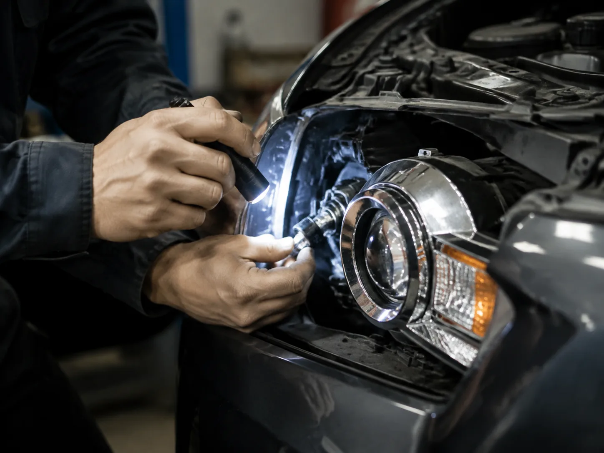

▲ 자동차 정기검사장(자료사진). 불합격 판정을 받아도 항목별 재검사만 받으면 된다 ⓒ CarPrism
정기검사를 받으러 갔다가 '부적합' 통보를 받으면 당황하기 마련이다. 하지만 전체 검사를 처음부터 다시 받아야 하는 것은 아니다. 불합격 항목만 손봐서 재검사를 받으면 되고, 그마저도 기간 안에만 다녀오면 별도 예약이나 수수료 없이 처리된다.
1. 10일 — 재검사를 신청해야 하는 기한

▲ 정기검사소 입구(자료사진). 부적합 판정을 받으면 통보일로부터 10일 이내에 재검사를 신청해야 한다 ⓒ CarPrism
정기검사에서 부적합(불합격) 판정을 받으면, 검사원으로부터 통보를 받은 날부터 10일 이내에 재검사를 신청해야 한다. 이 기한을 넘기면 검사를 받지 않은 것으로 처리돼 지연 과태료가 부과되기 시작한다. 반드시 달력에 표시해두고 기한 안에 정비와 재검사를 마치는 것이 좋다.
2. 재검사 절차 — 처음부터 다시가 아니다

▲ 정기검사 대기실(자료사진). 재검사는 불합격 판정을 받은 해당 항목만 다시 검사하는 방식이다 ⓒ CarPrism
많은 운전자가 '재검사'라는 말에 전체 검사를 처음부터 다시 받아야 한다고 오해한다. 실제로는 등록번호판 손상이나 등화장치 결함처럼 불합격 판정을 받은 항목만 정비한 뒤 해당 항목만 재검사받으면 된다. 기한(10일) 내에 재검사를 신청하면 별도 예약 절차나 수수료 재납부 없이 진행할 수 있다는 것도 장점이다. 재검사에서 적합 판정을 받으면, 재검사를 받은 날이 아니라 최초 검사를 받은 날에 검사를 받은 것으로 간주된다.

▲ 등화장치 정비 이미지(개념 이미지). 등화류·번호판처럼 경미한 결함은 정비 사진을 첨부해 온라인으로도 재검사를 신청할 수 있다 ⓒ CarPrism
불합격 사유가 등록번호판 손상이나 경미한 등화류 결함처럼 가벼운 항목이라면, 정비를 마친 사진을 첨부해 전산정보처리조직(온라인)을 통해 재검사를 신청할 수 있다. 그 외 항목은 검사소를 직접 방문해 재검사를 받아야 한다. 다만 10일의 기한 안에 재검사를 신청하지 못하면 검사를 받지 않은 것으로 처리되어, 항목별 재검사가 아니라 검사 절차를 처음부터 다시 진행해야 하고 검사 수수료도 새로 내야 한다. 기한을 지키는 것이 시간과 비용을 모두 아끼는 길이다.
3. 기한을 넘기면 — 지연 과태료가 붙는다

▲ 검사 결과 안내 모니터(자료사진). 재검사 기한을 넘기면 검사 지연 과태료가 단계적으로 늘어난다 ⓒ CarPrism
재검사 기한을 넘기고도 검사를 받지 않으면 자동차관리법 시행령에 따른 검사 지연 과태료가 부과된다. 검사 유효기간이 지난 날부터 30일 이내에는 4만 원이 부과되고, 31일째부터는 3일 초과할 때마다 2만 원씩 추가돼 지연 기간이 115일 이상이 되면 최대 60만 원에 도달한다. 과태료는 관할 지방자치단체가 부과하므로 구체적인 산정 내역이 궁금하다면 관할 시·군·구청에 문의하면 된다. 부적합 판정을 받았다고 방치하지 말고, 되도록 빨리 정비를 마치고 재검사를 받는 것이 과태료를 피하는 유일한 방법이다.
| 지연 기간 | 과태료 |
|---|---|
| 검사 유효기간 만료 후 30일 이내 | 4만 원 |
| 31일 이후, 3일 초과할 때마다 | 2만 원씩 추가 |
| 115일 이상 지연 | 최대 60만 원 |
4. 불합격 통보를 받았다면
체크 포인트
- 통보받은 날로부터 10일 이내에 재검사 일정을 잡자.
- 불합격 항목만 정비하면 되므로 전체 정비 비용을 걱정할 필요는 없다.
- 재검사는 추가 수수료 없이 진행되니 미루지 말고 바로 다녀오자.
5. 정리
체크포인트
- 재검사는 통보일로부터 10일 이내에 신청해야 한다.
- 전체가 아니라 불합격 항목만 다시 검사받으면 된다.
- 기한 내 재검사는 수수료 재납부가 없다.
- 기한을 넘기면 최대 60만 원까지 지연 과태료가 붙는다.